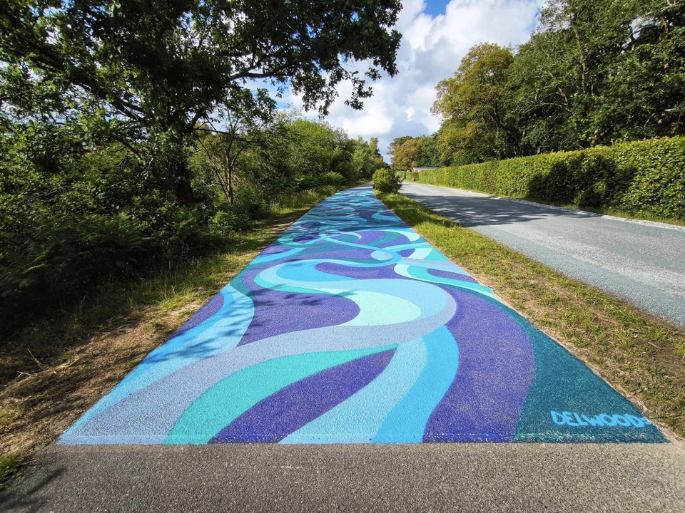
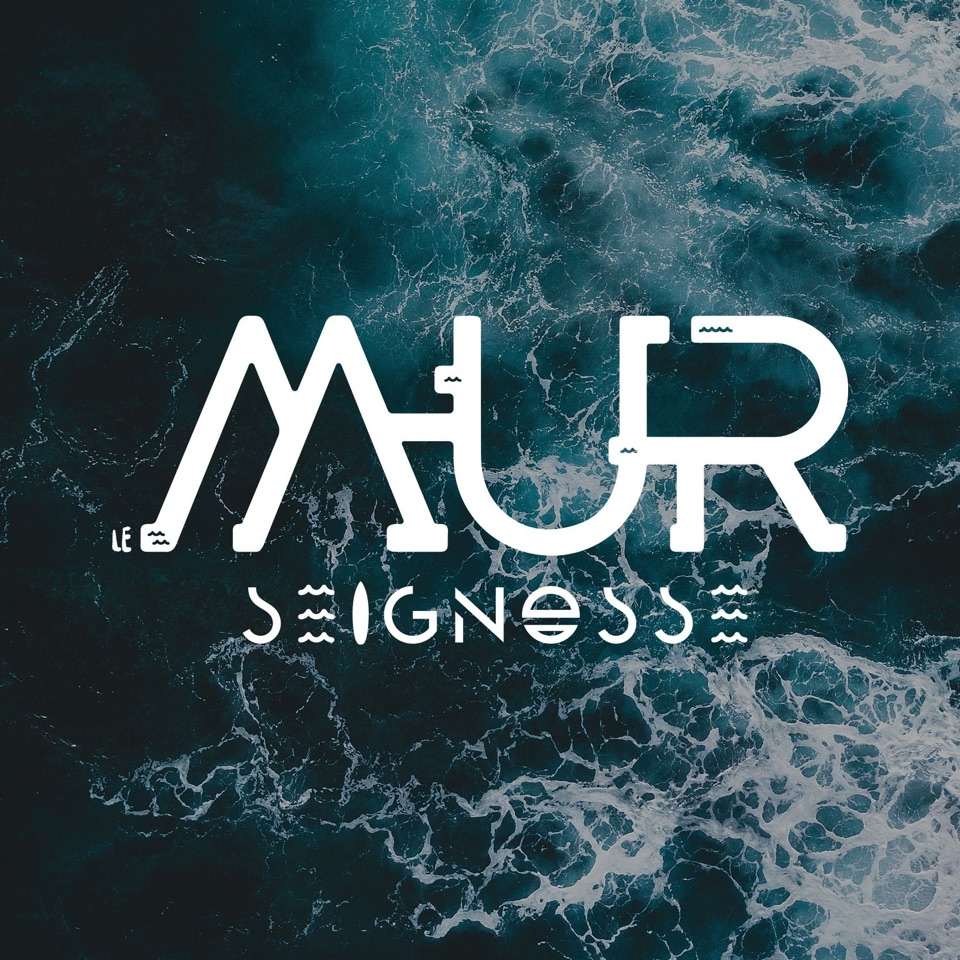
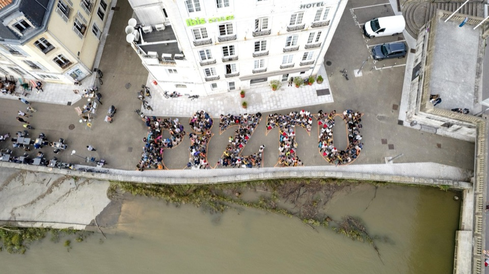
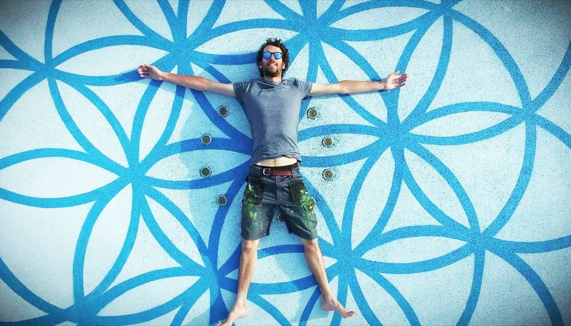
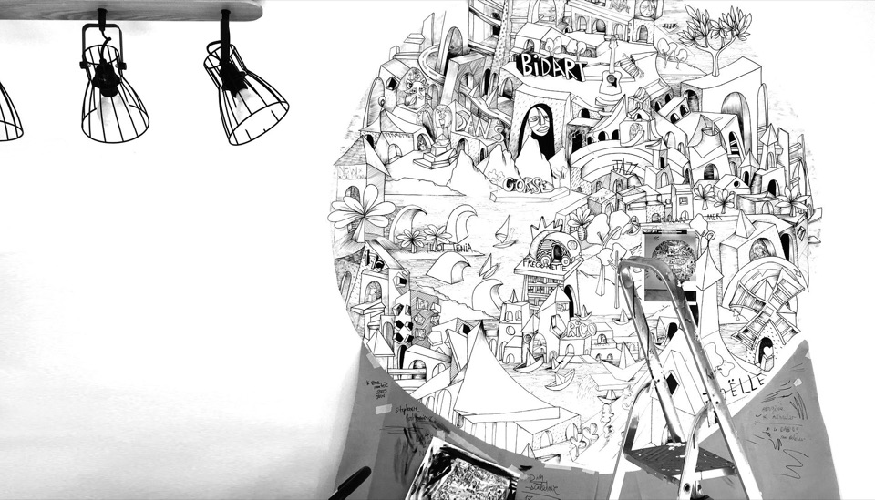
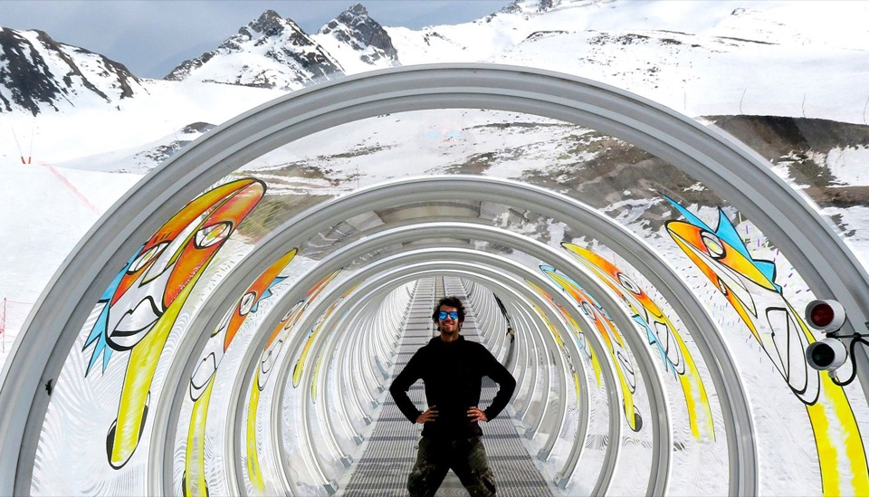

Labenne · 2024
Confluence
Une fresque conçue pour le parcours « Tu roules sur l'art », le long d'une piste de mobilité douce portée par la Communauté de communes MACS.
Voir le projetParcours de mobilité douce, résidences, skateparks, façades d'auberges : chaque fresque naît d'un dialogue avec l'architecture, l'histoire et les habitants du site.
Labenne · 2024
Une fresque conçue pour le parcours « Tu roules sur l'art », le long d'une piste de mobilité douce portée par la Communauté de communes MACS.
Voir le projetSkatepark de Biarritz · 2024
Une fresque participative réalisée dans le cadre du Lab Sport & Territoires d'Indarra, œuvre collective autour du sport et de son impact sur les territoires.
Voir le projetBayonne · 2025 · avec Elsa Langlais / Elzarra
Bayonne
Un mandala en anamorphose dessiné dans le restaurant Korail : le portrait du quartier Saint-Esprit, vu depuis la place du Réduit. Cinquante sérigraphies en tirage limité.
Voir le projetBidart
Une série de fresques sur le patrimoine de Bidart, réalisée sur les murs de l'auberge Koskenia, face à la mairie.
Voir le projet





